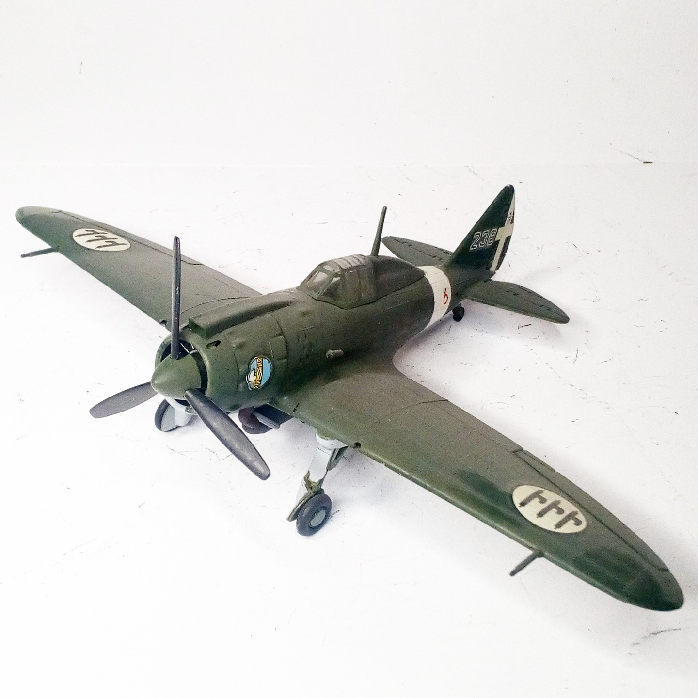
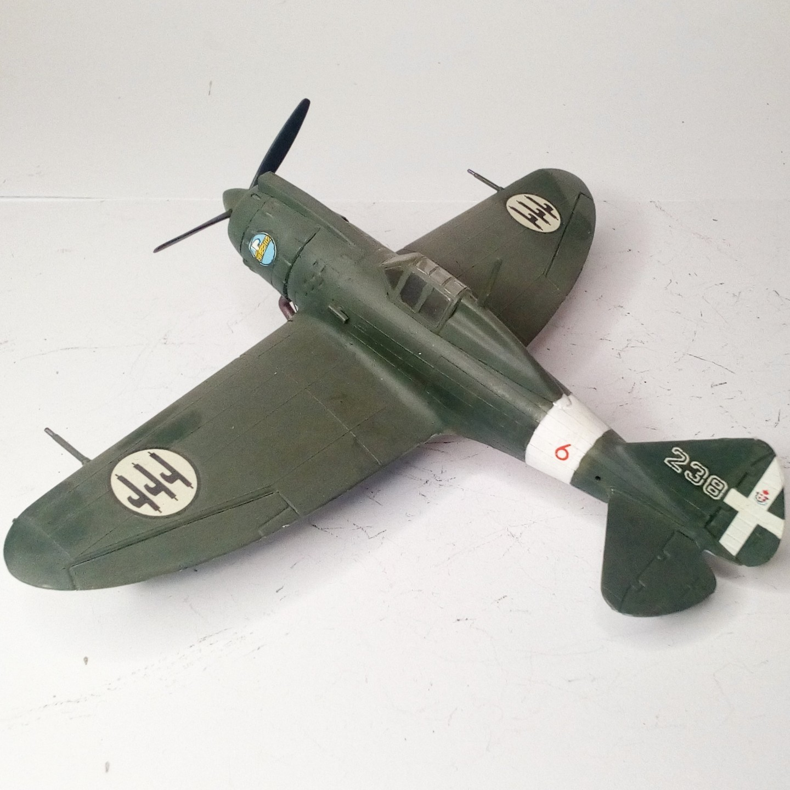

Aerei · scale model archive
Reggiane Re 2002 'Ariete'
Reggiane Re 2002 'Ariete' — Kit: Supermodel, Scale: 1/72. 6 rosso della 238° Squadriglia 101° Gruppo Tuffatori. 5° Stormo Assalto . Regia Aeronautica…

Photo gallery

English description
6 rosso della 238° Squadriglia 101° Gruppo Tuffatori. 5° Stormo Assalto . Regia Aeronautica Manduria summer 1943
#1/72 #Supermodel #Re2002
Descrizione italiana
6 rosso della 238ª Squadriglia, 101° Gruppo Tuffatori, 5° Stormo Assalto, Regia Aeronautica, Manduria, estate 1943. #1/72 #Supermodel #Re2002